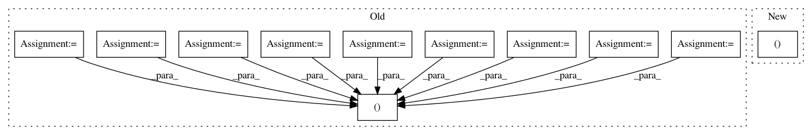

2c6caaa39f272e0280533159e3dbc5209dddf62f,spatial_transforms.py,CornerCrop,__call__,#CornerCrop#Any#,211
Before Change
th, tw = (self.size, self.size)
x1 = int(round((image_width - tw) / 2.))
y1 = int(round((image_height - th) / 2.))
x2 = x1 + tw
y2 = y1 + th
elif self.crop_position == "tl":
x1 = 0
y1 = 0
x2 = self.size
y2 = self.size
elif self.crop_position == "tr":
x1 = image_width - self.size
y1 = 0
x2 = image_width
y2 = self.size
elif self.crop_position == "bl":
x1 = 0
y1 = image_height - self.size
x2 = self.size
y2 = image_height
elif self.crop_position == "br":
x1 = image_width - self.size
y1 = image_height - self.size
x2 = image_width
y2 = image_height
img = img.crop((x1, y1, x2, y2))
return img
After Change
image_width = img.size[0]
image_height = img.size[1]
h, w = (self.size, self.size)
if self.crop_position == "c":
i = int(round((image_height - h) / 2.))
j = int(round((image_width - w) / 2.))
In pattern: SUPERPATTERN
Frequency: 3
Non-data size: 11
Instances
Project Name: kenshohara/3D-ResNets-PyTorch
Commit Name: 2c6caaa39f272e0280533159e3dbc5209dddf62f
Time: 2018-11-01
Author: kensho.hara@aist.go.jp
File Name: spatial_transforms.py
Class Name: CornerCrop
Method Name: __call__
Project Name: SPFlow/SPFlow
Commit Name: 9abdb78fb6f02710414a565ed87327c77e7d9c90
Time: 2018-12-11
Author: molina@cs.tu-darmstadt.de
File Name: src/spn/structure/leaves/parametric/utils.py
Class Name:
Method Name: get_scipy_obj_params
Project Name: automl/SMAC3
Commit Name: 7c11dd4a45a1c323176be5710d60120643693a3f
Time: 2019-12-20
Author: feurerm@informatik.uni-freiburg.de
File Name: smac/epm/util_funcs.py
Class Name:
Method Name: get_rng